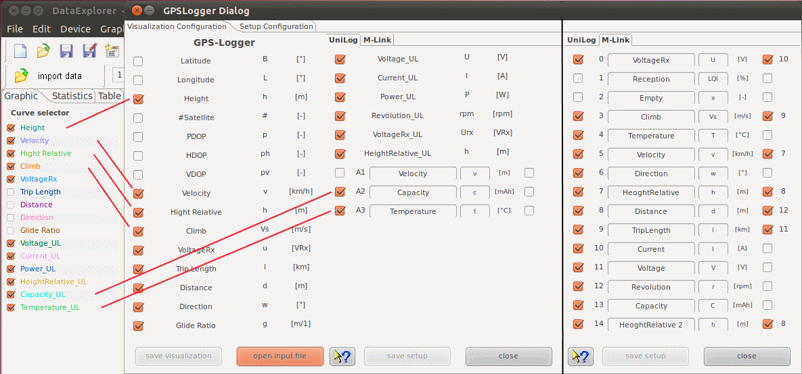
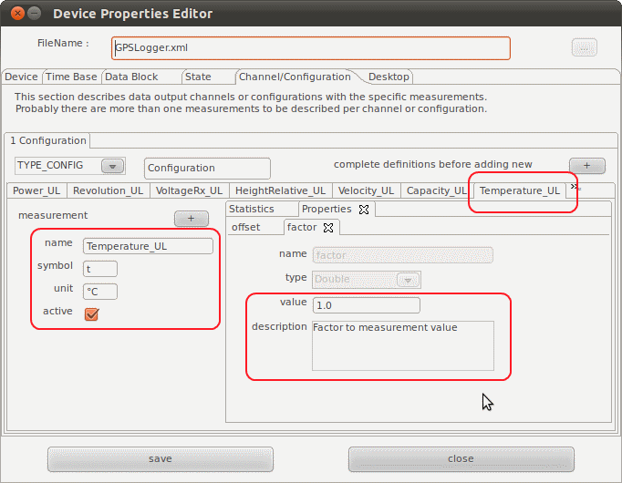
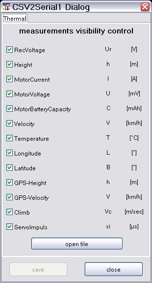
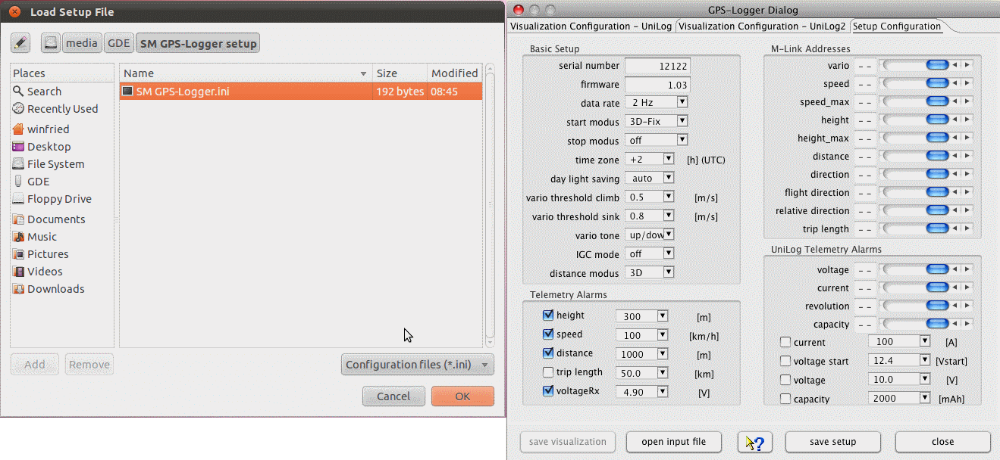

The below device dialog should be used to configure the visualization of measurements. Unchecked measurement will not be displayed. This will lead to a more clear representation, curves which are hard to be interpreted in two dimensional way, may be blanked out. It is possible to import NMEA data files using the 'import data' button as well.

Hint: The visualization configuration will be applied as well as it is closed in cases where the tool bar button is used to import the data.
Is a UniLog as sensor device connected the three analog entry fields might be named freely. Same is valid for the symbol. The unit will be overtaken from the NMEA data. As initial presets 'velocity', 'capacity' and 'temperature' gets used. This has to be adapted if required. The scale of the graphics and the curve selector table will display updated names for the measurements. UniLog measurements has always a trailing '_UL'. If required a measurement offset as well as a factor can be configured using the device properties editor.

If Multiplex sensors are connected, the units are overtaken from the NMEA data as well. The names and symbols must be manually adapted. The initial presets are only samples. Multiplex M-Link sensor measurements has always a trailing '_ML'.

At the right hand side of the configuration panel are check boxes which enable a semi automatic scale synchronization. While checking measurement name will be compared to previous once and the fitting measurement ordinal will be added to the measurement configuration entry. Using scale synchronization will reduce the required space for scales and spend more for the graphics. Overlaying curves in this matter will allow direct comparison without using the curve compare window.
Is is reasonable to think about the sequence and usage of the sensors (sample: Current/Voltage/Capacity - motor battery) before import data. Afterwards adapt and save the configuration without loading data. The names of curves should be unique for this device if possible, sample CurrentMotor, CurrentRx, VoltageMotor, VoltageRx. Please choose the curve names, in case of scale synchronization, in a way that the names starts with the same word, sample Current synchronized to CurrentMotor, CurrentRx, CurrentMotor2. This is the algorithm the semi-automatic synchronization works. Using the DevicePropertiesEditor it is possible to synchronize almost every curve to another by configuration. Sure, this makes only sense for curves where use somehow matching range of values. Now it time to import data and cross check again if the unit, symbol a name matches the requirements. Symbols are optional (Current I [A], Voltage U [V], ...). Do the curves and data match it is possible to select the synchronization check boxes. Finally save the configuration again.
Hint: While changing curve names, symbols units or synchronization entries the device configuration file gets changed. With a later version of DataExplorer the device properties schema might change (DeviceProperties_Vxy.xsd), in this case a backup copy of the complete device configurations will be created (Devices_Vxy-1.xsd) and your change will remain there. The out dated device configuration file can be used as template to update the new version.
The second main tabulator enables loading device setup data from file as well as change and save direct to the SD-card. While switching to the tab the file selection dialog will be opened. As required this can be skipped or repeated.

It is possible to configure a number of alarm thresholds and addresses to be used for Multiplex M-Link sensors.
Hint: A preset directory path is configurable using the device properties editor on tab, Data Block - Optional Entries - data path. This configuration will position the file open dialog at the directory where the NMEA data files can directly be selected at the point where the SD-card is mounted. To load the setup file change into 'SM GPS-Logger setup' directory.
Tip: Since the GPS-Logger stores GPS data it is possible to load and display such data in Google Earth using KMZ files. This files can be exported using the file menu or directly launched to an installed Google Earth application. How to do so, refer to Toolbar -> Google Earth.